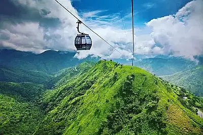

Cross River Maize Chamber of Commerce
Home
Discover
Directory
Join
Join the Chamber
Local Photos of Interest
Calabar Roundabout
Agbokim Waterfall

Obudu Cable Car
Aerial View of Calabar
Calabar Museum
Calabar Cultural Carnival